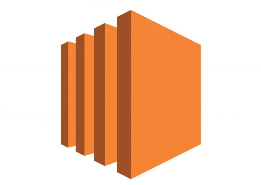

New
AWS EC2 (Elastic Compute Cloud)
Blog Example oneAWS EC2, or Elastic Compute Cloud, is a service provided by Amazon Web Services (AWS) that allows users to easily launch and manage virtual servers, known as instances, in the cloud. It provides resizable compute capacity, enabling users to scale their infrastructure based on demand. EC2 supports a wide range of operating systems and applications, offering flexibility and versatility for various workloads. With features like auto-scaling and multiple geographic regions, EC2 ensures high availability, fault tolerance, and cost-effectiveness for businesses and developers deploying applications in the cloud.
New
AWS IAM (Identity & Acess Management)
BlogWiz
AWS IAM, or Identity and Access Management, is a service provided by Amazon Web Services (AWS) that enables users to manage access to AWS services securely. It allows users to create and manage users, groups, and permissions to control who can access specific resources within an AWS account. IAM helps organizations enforce security best practices by providing granular control over user permissions, allowing least privilege access, and enabling multi-factor authentication (MFA) for added security. It plays a crucial role in ensuring data privacy, compliance, and overall security posture within AWS environments.
AWS Lambda
AWS Lambda is a serverless computing service provided by Amazon Web Services (AWS) that enables developers to run code without provisioning or managing servers. With Lambda, developers can upload their code (written in languages like Node.js, Python, Java, etc.) and Lambda automatically handles scaling, monitoring, and maintenance. It allows developers to focus on writing code and building applications without worrying about infrastructure management. Lambda functions can be triggered by various AWS services or events, making it ideal for building event-driven and scalable applications. It offers cost-effectiveness by charging only for the compute time consumed by the code. Overall, AWS Lambda simplifies the process of deploying and running code in a serverless environment, promoting agility, scalability, and cost efficiency for developers and businesses.
AWS VPC (Virtual Private Cloud)
AWS VPC, or Virtual Private Cloud, is a service provided by Amazon Web Services (AWS) that enables users to create isolated virtual networks within the AWS cloud. It allows users to define their own network topology, including subnets, route tables, and security settings, similar to an on-premises data center. VPC provides granular control over network resources, such as IP addressing, access control, and connectivity options. Users can customize VPC configurations to meet specific security and compliance requirements, ensuring secure communication between AWS resources and external networks. Overall, AWS VPC facilitates the creation of private, secure, and scalable network environments in the cloud.
AWS RDS (Relational Database Service)
AWS RDS, or Amazon Relational Database Service, is a managed database service provided by Amazon Web Services (AWS) that simplifies the setup, operation, and scaling of relational databases in the cloud. RDS supports popular database engines such as MySQL, PostgreSQL, Oracle, SQL Server, and Amazon Aurora, allowing users to choose the database engine that best suits their application requirements. With RDS, AWS manages routine database tasks like hardware provisioning, patching, backups, and monitoring, freeing users from administrative burdens. RDS offers features like automated backups, read replicas for scalability and high availability, and encryption for data security.
AWS Cloud Formation
AWS CloudFormation is a service provided by Amazon Web Services (AWS) that allows users to create and manage infrastructure as code. It enables users to define and provision AWS resources using templates written in JSON or YAML format. CloudFormation templates describe the desired state of the infrastructure, including resources like EC2 instances, S3 buckets, databases, networking components, and more. Users can create, update, or delete entire stacks of resources in a controlled and automated manner using CloudFormation. It helps streamline resource provisioning, maintain consistency across environments, and automate infrastructure deployments..